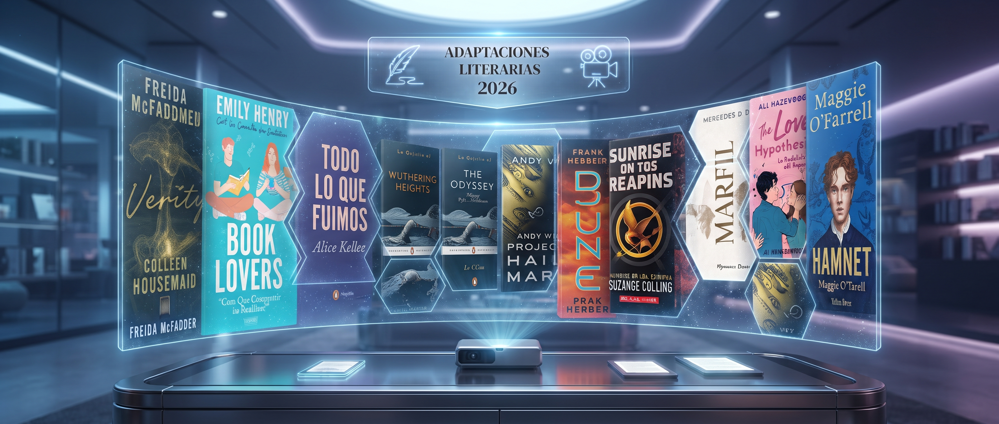

Este año diversas plataformas lanzaran adaptaciones de libros que fueron sumamente exitosas entre los lectores en sus años de lanzamiento.

Una divertida comedia romatica ambientada en el mundo academico, donde una doctoraanda en bilogia y un profesor joven y estricto acuerdan fingir una relacion falsa que termina complicandose con sentimientos reales.
Una emotiva novelaque explora la culpa, los secretos familiares y la oportunidad de sanar el pasado, mientras los protagonistas descubren que el primer amor a veces merece una segunda oportunidad.
Un conmovedor relato sobre la amistad y el primer amor que se reencuentra tras una decada de silencio, donde la protagonista debe enfrentarse a las palabras y errores que los separaron en el pasado.
Una tierna historia de crecimiento persona y romance juvenil universitario, donde dos almas opuestas y heridas aprenden a confiar el uno en el otro mientras persiguen sus grandes sueños.
Registrate para recibir una recomendacion semanal de libros.